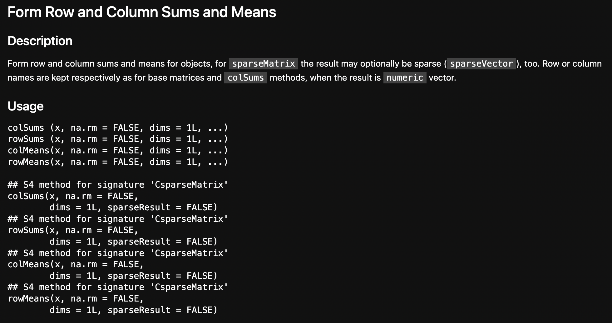
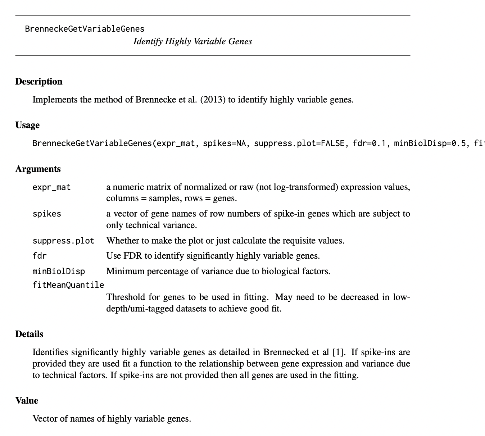

raw.counts <- Matrix::readMM('./localdata/E-MTAB-7117.expression_tpm.mtx')
dim(raw.counts)- 21797
- 966
Bailey Andrew
January 10, 2023
Yesterday, we looked at a scRNA-seq dataset of Danio rerio cells (Hernández et al. 2018). We spent a lot of time understanding how the dataset was created, and ended with a bit of a mystery: why did the cell counts not match up between our datasets? I don’t have an answer to that mystery, unfortunately - but in my experience this mismatch happens in a lot of papers. We might as well continue with the analysis, rather than getting hung up on a minor anomaly.
I realized since yesterday that there was another gene counts file, (the filtered tpms file). I downloaded this and the “experiment metadata” files; I suspect these may be useful as I know that the TPM values were pre-quality-control:
For the Smart-seq2 protocol transcript per million (TPM) values reported by Salmon were used for the quality control (QC). Wells with fewer than 900 expressed genes (TPM > 1) or having more than either 60% of ERCC or 45% of mitochondrial content were annotated as poor quality cells. As a result, 322 cells failed QC and 542 single cells were selected for the further study.
– Quality Control of Single-Cell Data; Materials and Methods Section; Hernández et al. (2018)
What does this extra metadata file tell us? Let’s see:
| Source.Name | Comment.ENA_SAMPLE. | Comment.BioSD_SAMPLE. | Characteristics.organism. | Characteristics.strain. | Characteristics.age. | Unit.time.unit. | Characteristics.developmental.stage. | Characteristics.sex. | Characteristics.genotype. | ⋯ | Comment.ENA_EXPERIMENT. | Scan.Name | Comment.SUBMITTED_FILE_NAME. | Comment.ENA_RUN. | Comment.FASTQ_URI. | Comment.SPOT_LENGTH. | Comment.READ_INDEX_1_BASE_COORD. | Factor.Value.genotype. | Factor.Value.organism.part. | Factor.Value.single.cell.identifier. | |
|---|---|---|---|---|---|---|---|---|---|---|---|---|---|---|---|---|---|---|---|---|---|
| <chr> | <chr> | <chr> | <chr> | <chr> | <int> | <chr> | <chr> | <chr> | <chr> | ⋯ | <chr> | <chr> | <chr> | <chr> | <chr> | <int> | <int> | <chr> | <chr> | <chr> | |
| 1 | CD4_gill_A1 | ERS2634491 | SAMEA4814592 | Danio rerio | AB | 6 | month | adult | male | Tg(cd4-1:mCherry) | ⋯ | ERX2737040 | SLX-10875.N701_S513.C9FTNANXX.s_5.r_1.fq.gz | SLX-10875.N701_S513.C9FTNANXX.s_5.r_1.fq.gz | ERR2723271 | ftp://ftp.sra.ebi.ac.uk/vol1/fastq/ERR272/001/ERR2723271/ERR2723271_1.fastq.gz | 250 | 126 | Tg(cd4-1:mCherry) | gill | CD4_gill_A1 |
| 2 | CD4_gill_A1 | ERS2634491 | SAMEA4814592 | Danio rerio | AB | 6 | month | adult | male | Tg(cd4-1:mCherry) | ⋯ | ERX2737040 | SLX-10875.N701_S513.C9FTNANXX.s_5.r_2.fq.gz | SLX-10875.N701_S513.C9FTNANXX.s_5.r_2.fq.gz | ERR2723271 | ftp://ftp.sra.ebi.ac.uk/vol1/fastq/ERR272/001/ERR2723271/ERR2723271_2.fastq.gz | 250 | 126 | Tg(cd4-1:mCherry) | gill | CD4_gill_A1 |
| 3 | CD4_gill_A10 | ERS2634691 | SAMEA4814793 | Danio rerio | AB | 6 | month | adult | male | Tg(cd4-1:mCherry) | ⋯ | ERX2737240 | SLX-10875.N712_S513.C9FTNANXX.s_5.r_1.fq.gz | SLX-10875.N712_S513.C9FTNANXX.s_5.r_1.fq.gz | ERR2723471 | ftp://ftp.sra.ebi.ac.uk/vol1/fastq/ERR272/001/ERR2723471/ERR2723471_1.fastq.gz | 250 | 126 | Tg(cd4-1:mCherry) | gill | CD4_gill_A10 |
| 4 | CD4_gill_A10 | ERS2634691 | SAMEA4814793 | Danio rerio | AB | 6 | month | adult | male | Tg(cd4-1:mCherry) | ⋯ | ERX2737240 | SLX-10875.N712_S513.C9FTNANXX.s_5.r_2.fq.gz | SLX-10875.N712_S513.C9FTNANXX.s_5.r_2.fq.gz | ERR2723471 | ftp://ftp.sra.ebi.ac.uk/vol1/fastq/ERR272/001/ERR2723471/ERR2723471_2.fastq.gz | 250 | 126 | Tg(cd4-1:mCherry) | gill | CD4_gill_A10 |
| 5 | CD4_gill_A11 | ERS2635221 | SAMEA4815323 | Danio rerio | AB | 6 | month | adult | male | Tg(cd4-1:mCherry) | ⋯ | ERX2737770 | SLX-10875.N714_S513.C9FTNANXX.s_5.r_1.fq.gz | SLX-10875.N714_S513.C9FTNANXX.s_5.r_1.fq.gz | ERR2724001 | ftp://ftp.sra.ebi.ac.uk/vol1/fastq/ERR272/001/ERR2724001/ERR2724001_1.fastq.gz | 250 | 126 | Tg(cd4-1:mCherry) | gill | CD4_gill_A11 |
| 6 | CD4_gill_A11 | ERS2635221 | SAMEA4815323 | Danio rerio | AB | 6 | month | adult | male | Tg(cd4-1:mCherry) | ⋯ | ERX2737770 | SLX-10875.N714_S513.C9FTNANXX.s_5.r_2.fq.gz | SLX-10875.N714_S513.C9FTNANXX.s_5.r_2.fq.gz | ERR2724001 | ftp://ftp.sra.ebi.ac.uk/vol1/fastq/ERR272/001/ERR2724001/ERR2724001_2.fastq.gz | 250 | 126 | Tg(cd4-1:mCherry) | gill | CD4_gill_A11 |
At first glance, no - it does not. The metadata has 2112 lines, and removing poor quality cells leaves us with 1952.
But, it does seem like some cells have multiple names, so let’s filter by unique values.
Gee whiz, that 976 number returns… We can re-use the list of 10 extra cells calculated yesterday to investigate them:
But as before there doesn’t really seem to be any outstanding features. So the mystery continues!
The raw.counts matrix is a Sparse Matrix with 21,797 genes and 966 cells - the values are expressed in TPM. Our goal is to filter out the low quality cells.
For the Smart-seq2 protocol transcript per million (TPM) values reported by Salmon were used for the quality control (QC). Wells with fewer than 900 expressed genes (TPM > 1) or having more than either 60% of ERCC or 45% of mitochondrial content were annotated as poor quality cells. As a result, 322 cells failed QC and 542 single cells were selected for the further study.
– Quality Control of Single-Cell Data; Materials and Methods Section; Hernández et al. (2018)
At the time, I didn’t think we could find the mitochondrial genes with the data we had (and same with ERCC). I’ve gone back and edited this though, in the dropdowns.
I used Python since chronologically I did this ater I gave up on R. The work to create the mito-genes csv was done in the blog post Exploring Ensembl.
0 ENSDARG00000083480
1 ENSDARG00000082753
2 ENSDARG00000081443
3 ENSDARG00000080337
4 ENSDARG00000083046
Name: gene_id, dtype: objectNow we want to calculate the percent of genomic material per cell that is contained in just the genes in mito_genes, which should not be too hard! Left as excersize to the reader.
I could not figure out how to do this; I think they have already been removed from the dataset that we have.
But yesterday we noticed that we could get the 542 futher-study cells by looking at the metadata and only grabbing the cells which were eventually assigned a cluster by the researchers.
NULLNow we need to perform quality control on the genes;
For each of the 542 single cells, counts reported by Salmon were transformed into normalised counts per million (CPM) and used for the further analysis. This was performed by dividing the number of counts for each gene with the total number of counts for each cell and by multiplying the resulting number by a factor of 1,000,000. Genes that were expressed in less than 1% of cells (e.g. 5 single cells with CPM > 1) were filtered out. In the final step we ended up using 16,059 genes across the 542 single cells. The scran R package (version 1.6.7) Lun, Bach, and Marioni (2016) was then used to normalise the data and remove differences due to the library size or capture efficiency and sequencing depth.
– Downstream Analysis of Smart-seq2 Data; Materials and Methods Section; Hernández et al. (2018)
It was harder than expected, as I am less-than-fluent with R and their sparse matrix operations weren’t as analogous to dense matrices as I would have liked. First let’s take a look at our the sparse datatype we have. I found the blogpost by Slowikowski (2020) useful, but ultimately got fed up with R and decided to transition to python.
Formal class 'dgTMatrix' [package "Matrix"] with 6 slots
..@ i : int [1:1156509] 4 10 19 36 56 57 58 59 62 69 ...
..@ j : int [1:1156509] 0 0 0 0 0 0 0 0 0 0 ...
..@ Dim : int [1:2] 21797 542
..@ Dimnames:List of 2
.. ..$ : NULL
.. ..$ : NULL
..@ x : num [1:1156509] 0.593 145.541 361.733 0.178 0.107 ...
..@ factors : list()(i, j) gives us the rows and columns, with the value being the corresponding entry in x. The T in dgTMatrix stands for triplet, because it’s essentially just a list of triplets (i, j, x). Another common format is CsparseMatrix, although the explanation is more complicated. It’s explained well by Slowikowski (2020), I’m just in a rush to get to actual data analysis!
Formal class 'dgCMatrix' [package "Matrix"] with 6 slots
..@ i : int [1:1156509] 4 10 19 36 56 57 58 59 62 69 ...
..@ p : int [1:543] 0 1610 3532 5491 7585 9273 11182 13157 14623 15552 ...
..@ Dim : int [1:2] 21797 542
..@ Dimnames:List of 2
.. ..$ : NULL
.. ..$ : NULL
..@ x : num [1:1156509] 0.593 145.541 361.733 0.178 0.107 ...
..@ factors : list()Now, we want to transform the data into normalized counts per million.
ERROR: Error in colSums(raw.counts.csparse): 'x' must be an array of at least two dimensions
Error in colSums(raw.counts.csparse): 'x' must be an array of at least two dimensions
Traceback:
1. colSums(raw.counts.csparse)
2. stop("'x' must be an array of at least two dimensions")
?colSums to get the docsFun fact: for some reason running the R help command will mess with Quarto’s html, breaking your webpage!
ERROR: Error in base::rowSums(x, na.rm = na.rm, dims = dims, ...): 'x' must be an array of at least two dimensions
Error in base::rowSums(x, na.rm = na.rm, dims = dims, ...): 'x' must be an array of at least two dimensions
Traceback:
1. Matrix::rowSums(raw.counts.csparse)
2. Matrix::rowSums(raw.counts.csparse)
3. base::rowSums(x, na.rm = na.rm, dims = dims, ...)
4. stop("'x' must be an array of at least two dimensions")And it’s about here that I get fed up with R.
Let’s load our raw.counts.filtered matrix in python:
<21797x542 sparse array of type '<class 'numpy.float64'>'
with 1156509 stored elements in Compressed Sparse Column format>And now we’ll copy the process they used to rescale their data in terms of genes per cell.
genes_per_cell = raw_counts_filtered.sum(axis=0)
raw_counts_nonzero = raw_counts_filtered[:, genes_per_cell > 0]
genes_per_cell = genes_per_cell[genes_per_cell > 0]
raw_counts_nonzero = raw_counts_nonzero / genes_per_cell * 1e6
raw_counts_normed = sparse.csr_array(raw_counts_nonzero)
raw_counts_normed<21797x542 sparse array of type '<class 'numpy.float64'>'
with 1156509 stored elements in Compressed Sparse Row format>Now we need to filter out genes who were expressed in less than 1% of cells. They’re a bit more strict than that - it has to have a CPM of at least 1 to count as being “expressed”.
raw_counts_expressed = raw_counts_normed.copy()
raw_counts_expressed[raw_counts_expressed <= 1] = 0
raw_counts_expressed[raw_counts_expressed > 1] = 1
number_of_cells_gene_appears_in = raw_counts_expressed.sum(axis=1)
raw_counts_genes_filtered = raw_counts_normed[
number_of_cells_gene_appears_in > 5,
:
].copy()<17832x542 sparse array of type '<class 'numpy.float64'>'
with 1141288 stored elements in Compressed Sparse Row format>We have too many genes and I’m not sure why - however, I can’t find anywhere in their paper a count of the pre-filtered genes. Just like how their dataset contains more cells than reported, it may contain more genes than reported!
In order to identify the highly variable genes (HVGs) we utilised the Brennecke Method (Brennecke et al. 2013). We inferred the noise model from the ERCCs and selected genes that vary higher than 20% percentage of variation. This was performed by using the “BrenneckeGetVariableGenes” command of M3Drop v1.4.0 R package setting fdr equal to 0.01 and minimum percentage of variance due to biological factors (minBiolDisp) equal to 0.2. In total, 3,374 were annotated as HVGs.
– Downstream Analysis of Smart-seq2 Data; Materials and Methods Section; Hernández et al. (2018)
The BrenneckeGetVariableGenes method is described in the M3Drop documentation as follows:

BrenneckeGetVariableGenesThus we can see that we need the ERCCs to deduce the HGVs. However, I can’t find any data on the ERCC spike-ins, so at this point we stop here. Sorry to disappoint.